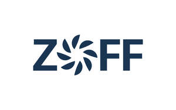

Trade Mark Journal No.2025/025 20 June 2025
UK00004212556 2 June 2025 (12,37,39)

- Class 12
- Marine vessels; vessels; underwater vehicles; remotely operated underwater vehicles for transportation; autonomous underwater vehicles for seabed inspection; remotely operated underwater vehicles.
- Class 37
- Repair of vessels; maintenance of vessels; construction of naval vessels; underwater construction, installation, and repair; laying of marine cables; underwater dredging; river channel dredging; marine outfitting; seabed stabilization services; laying of maritime cables; laying and burial of cables; marine equipment; dry dock berthing services for marine vessels; seabed stabilization services using reinforcement bars; seabed stabilization services using cement injection; seabed stabilization services using vibro-compaction; seabed stabilization services using cement grout injection; winch-based lifting of machinery for installation, repair, and construction; provision of information on ship repair or maintenance; ship dismantling; ship launching services; maintenance and repair of ships; cleaning of ship exteriors; custom shipbuilding; maintenance and repair of ship hulls; installation of interior fittings in ships; maintenance and repair of ship parts and components; refitting, renovation, re-equipment, and repair of yachts and ships; removal of marine vegetation from ship hulls; surface conditioning of ships; coating services for ship maintenance; coating services for ship repair; construction services for defense equipment for vessels; underwater construction; underwater repairs; underwater repair services; supervision of underwater construction; installation of underwater pipelines; underwater repair services; excavation services; advisory services related to excavation; excavations; underground tank excavations; rental of automotive machinery for use in excavations; excavation services to verify the location of utility lines; excavation services for construction sites, excluding archaeological purposes; offshore construction; construction of harbours.
- Class 39
- Boat rental; boat rental services; shipping brokerage and transportation; maritime brokerage; ship brokerage; transport and freight brokerage; maritime salvage; maritime towing services; towing of ships; shipwreck rescue.
ZUMAIA OFFSHORE, S.L.
Representative: Marks & Us Lawyers Marcas y Patentes